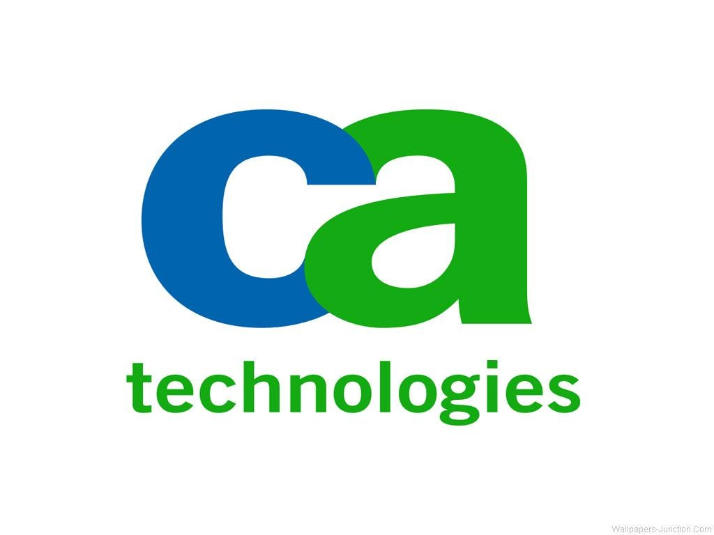

Feb 21
Old Technologies Can Become the New Ones

Wondering how Computer Associates with solutions like Unicenter, this great IT infrastructure Configuration management system has been at the frontier of apps and servers delivery and configuration for a big corporation could have missed the virtualization revolution and this period of infrastructure and software as a service model that we are actually using inside and outside corporations or that is maybe me old technology who missed these two tech innovations in which I tried to get started as an entrepreneur with a tech company in 2007.
I used to work with a very impressive IT change management platform that I saw so powerful at automating apps and os change management working for a big corporation but at that time I saw new solutions coming from tech startups like Microsoft with System Center Configuration Manager that were very well thought and maybe better not being adopted by this big corporation that I was working for.
This attitude of lately adopting new technologies made me feel angrier with this corporation and fuelled my need of starting this tech company that was about introducing new and powerful technologies inside french companies but I was angrier when I talked to some key french tech players of that time about my ideas that were already clearly exposing the cloud before the cloud, these french tech companies were also not so open to change and new opportunities coming from this your young black tech entrepreneur that I was.
Computers Associates was a tech company whose solutions I loved using like how I loved using Microsoft tech products for business. All these ranges of software about business IT management and operation and all these software development tools like team foundation server and the Microsoft Techdays events in Paris was an important event for me because it was a moment for pinning early new coming tech innovations because this event was connecting me with many actors of the tech ecosystem. I still remember this great fast datacenter container deployment that used ship containers on trucks with all these systems that were allowing the deployment of a fast and maybe temporary big datacenter serviced with all the required systems and configuration in a manner of hours. You could see that this great Microsoft solution is still useful because for emergencies this kind of data center could be a very useful help if deployed.
Now Computer Associates is a subsidiary of Broadcom which is the 5th software company in the world, a company that I know because of all the important works that it has done in network systems and applications. That’s how the economy works, companies are merging and … let’s say M&Aing for the sake of trying to coin a new English business verb but this article is not about coining term but expressing my sentiment on an industry that I like and In which I am a professional since decades. Even if I worked for the financial industry, I had always taken myself as someone working in tech, and all my experience in the financial industry has been about technology but I should agree that the financial industry helped me know better the economy and its range of actors, systems and dynamics broadening my view and perspective about the world.
At the same time that I was trying to introduce new technology in french companies, I was also trying to innovate with what was about to be one of the first online marketplaces about hairstyle services starting from a small audience of African immigrants. A marketplace that was soo obvious to me because of all these keywords trends that I had analyzed during 2007 and 2009. These trends were clearly showing an important set of African immigrants searching about special African hairstyle services and African hairstyle professional immigrants looking for customers, the only job I had to do was to build this marketplace and to connect them. When I introduced this project to the french administration for them to provide me the authorization to live in France and work on it they had not cared about the relevance of this project.
That’s only in 2013 or 2014 that this kind of marketplace was built and funded more than 1M euros in France while I was already here in my beloved Senegal. A 4-year gap or worse a 6-year gap between the emergence of an idea and its application is something not good for a great country like France and this is due to a lack of support of entrepreneurs and maybe bit of discrimination. The first incubators that I got in touch during that time (2006–20010) with were relevant initiatives for sure because they were trying to make entrepreneurship easy like how the french politics had alleged the administrative process for entrepreneurship with a program called auto-entrepreneur that I had adopted but was not so fast and had not this startup mindset that I myself was lacking at that time preferring these french way of entrepreneurship that is more about corporatism when the world was turning to be this world of status and connection between people who care.
Early adoption matter for countries also.